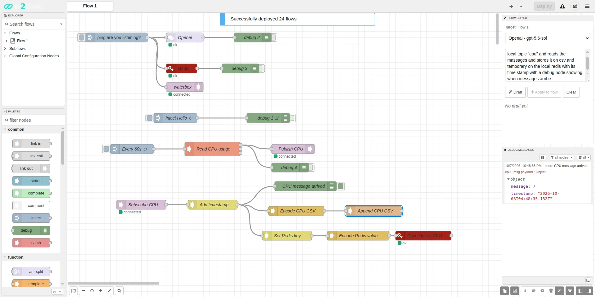

Web UI
Editor built in
Design, deploy and debug in the browser. Admin login supports viewer, deployer and administrator roles or OIDC. Run --headless in production.
n2link runs your Node-RED flows on a native Rust runtime, with the Node-RED editor built in. Keep your flows.json, drop the Node.js runtime, and add production controls for credentials, inbound traffic and outbound connections.
# clone and build (Rust 1.88+, npm for the editor build) git clone --recursive https://github.com/n2link/n2link.git cd n2link && cargo build --release # run: editor at http://127.0.0.1:1888 ./target/release/n2linkd

n2linkd. The lower flow was drafted by Flow Copilot from one sentence.Flow Copilot · experimental
Flow Copilot lives in the editor sidebar. You describe a flow in plain language; it drafts nodes and wires from the node catalog of this runtime, and nothing runs until you review the draft and press Deploy.
What you see in the recording
An ai-provider config node holds the model settings: OpenAI, Anthropic, xAI or Snowflake Cortex.
Pick the target flow and model in the Copilot panel and write what you want, e.g. read CPU usage with an exec node and publish it to a local MQTT topic.
The draft uses only nodes installed in this runtime, with their named ports and payload types, and is checked against node metadata.
Apply to flow imports the draft into the editor. You inspect it, then Deploy like any other change.
POST /assistant/draft[api_protection.copilot]Experimental. Drafts can add and connect nodes; they don't edit or delete existing ones yet. Live provider runs are not part of the automated test suite, which uses a deterministic local provider. Details in known issues.
Screens
n2link serves the Node-RED editor itself, so palettes, debug messages and deploys work the way they do in Node-RED. The n2link additions sit in the same sidebar and settings.
[egress] table from User Settings.Why n2link
The same editor and flows as Node-RED, on a single Rust binary, with the controls you need before a flow engine goes near production equipment.
Design, deploy and debug in the browser. Admin login supports viewer, deployer and administrator roles or OIDC. Run --headless in production.
Bring your existing flows.json and credential files. Deploys are revision-checked and one previous copy is kept for rollback.
Only the function node runs JavaScript, in an embedded QuickJS interpreter. Every other node is native Rust.
An explicit credentials migrate encrypts the sidecar, with a backup. Rotate, recover and export are built into the CLI.
Per-endpoint request budgets, an optional bearer token for http in, and an outbound allowlist you roll out from observe to enforce.
Third-party nodes run in a Wasmi sandbox with no file, network, clock or credential access. Installs are staged, self-tested and atomic.
Quick start
Build once from source, then it's one binary. npm is only needed at build time, to build the bundled Node-RED editor.
# prerequisites: Rust 1.88+, git, Node.js with npm (build time only) git clone --recursive https://github.com/n2link/n2link.git cd n2link # release build, including the Node-RED editor cargo build --release # run: opens the editor at http://127.0.0.1:1888 ./target/release/n2linkd # production: your own flow file, no web UI ./target/release/n2linkd run ./flows.json --headless
127.0.0.1:1888~/.n2linkdn2linkd --helpSupported targets
x86_64-unknown-linux-gnuLinuxx86_64-pc-windows-msvcWindows (also -gnu)aarch64-unknown-linux-gnu64-bit ARM, e.g. Raspberry Pi 4/5armv7-unknown-linux-gnueabihf32-bit ARM (also gnueabi)Windows builds need patch.exe on PATH (it ships with Git) and Visual Studio for MSVC.
What you get
--bind~/.n2linkdn2linkd.toml written on first start--features nodes_modbusArchitecture
No Node.js runtime. QuickJS runs Function nodes, Wasmi runs plugin nodes, and everything else is native Rust.
| Runtime | Rust on Tokio |
|---|---|
| Function node | Embedded QuickJS |
| Editor | Node-RED editor, served by n2linkd |
| Plugins | Wasmi sandbox, opt-in |
| History | SQLite deploy, node and Copilot history, opt-in |
Configuration
n2linkd.toml
Bind address and port for the editor and runtime API. --bind overrides it on the command line.
[ui-host] host = "0.0.0.0" port = 1888 # or on the command line # n2linkd run --bind 0.0.0.0:1888
CLI
Existing plaintext flows_cred.json files keep working. Encryption is an explicit step: preview it, then migrate with a new, empty backup directory.
n2linkd credentials status
n2linkd credentials migrate --dry-run
n2linkd credentials migrate --backup-dir /offline/n2link-credential-backup
# later
n2linkd credentials rotate --backup-key /offline/old-flows-cred.keyn2linkd.toml
Each endpoint class (editor, auth, WebSocket, health, Copilot, http in…) has its own body, rate, concurrency and deadline budget.
[api_protection] trusted_proxies = [] # every `http in` listener requires this bearer token webhook_bearer_env = "N2LINK_WEBHOOK_TOKEN" [api_protection.webhook] mode = "enforce" # or "observe" while migrating requests_per_minute = 600 max_concurrency = 16
n2linkd.toml
Start in observe to inventory outbound connections, then enforce an exact protocol and port allowlist. Cloud metadata endpoints stay denied.
[egress] mode = "observe" # then "enforce" allow_environment_proxy = false [[egress.allow]] protocols = ["mqtt"] host = "127.0.0.1" ports = [1883]
n2linkd.toml
Flow Copilot is in the default build. Structural checks against node metadata are on by default; the endpoint has its own request budget.
Copilot known issues →[copilot] strict_metadata = true [api_protection.copilot] mode = "enforce" requests_per_minute = 30 max_concurrency = 2
build + n2linkd.toml
Opt-in twice: build with the feature, then enable it. Plugins are staged and self-tested before activation, with one-call rollback.
WASM plugin operations →cargo build --release --features nodes_wasm
n2linkd plugin stage my_plugin.wasm
n2linkd plugin activate --sha256 <hex> acme/my-plugin
[runtime.wasm]
enabled = trueUse cases
Anywhere you'd run Node-RED but would rather ship one native binary with explicit security controls.
Collect sensor data over MQTT or TCP and forward it upstream, with outbound connections limited to an allowlist.
Run control and data flows on industrial PCs with encrypted credentials and per-endpoint request limits.
Run your existing flows on a Raspberry Pi, with the editor in the browser and no Node.js install on the device.
Prototype in Node-RED, then deploy the same flows.json to n2link at the edge.
Edit flows remotely through the web editor, behind admin roles or OIDC, with deploy and Copilot history.
Use the editor while building, then run the same binary with --headless in production.
Support n2link
n2link is built, debugged and maintained in personal time, and much of that work runs on paid AI tokens: Flow Copilot is tested against live models, and the code is reviewed and debugged with AI help. If n2link saves you time, a donation helps keep it moving.
Not able to donate? A star on GitHub, a bug report or a pull request helps too.